纸嫁衣
PAPER BRIDE
A CHINESE FOLK-HORROR PUZZLE SERIES · SINCE 2021
纸嫁衣奘铃村鸳鸯债红丝缠来生戏千秋魇卿不负千子树罗浮梦
Nine games. One cursed village.
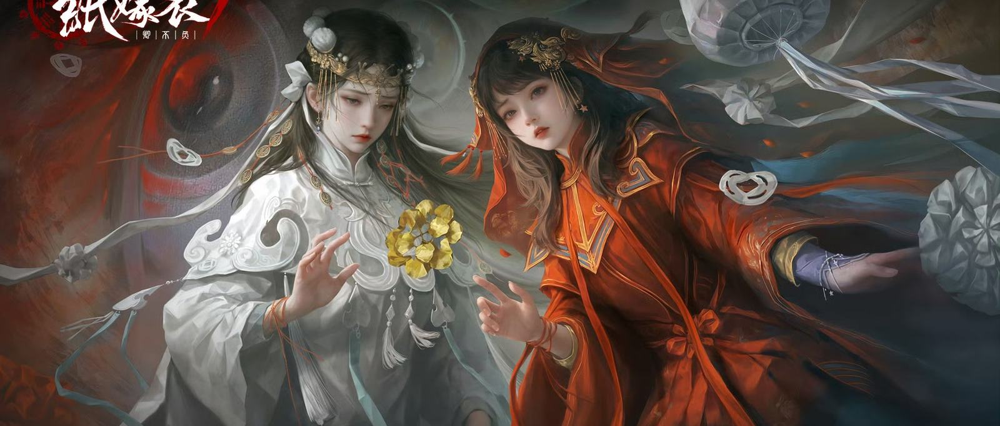
WHITE
FUNERALS · MOURNING · THE DEAD
RED
WEDDINGS · LUCK · NEW LIFE
Paper Bride puts them in the same room.
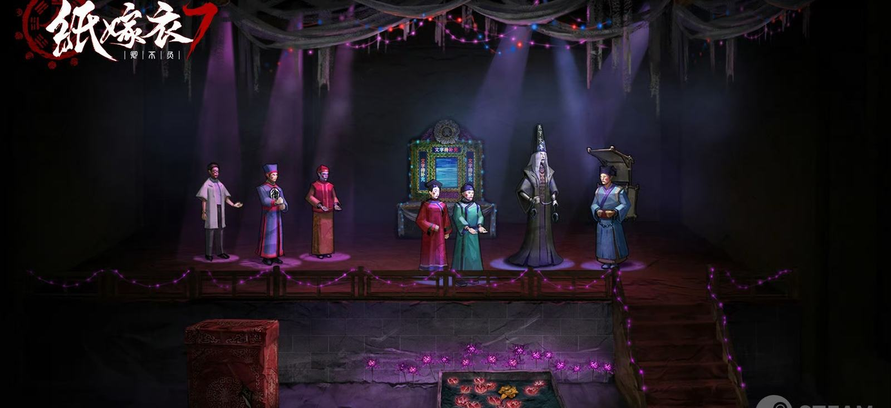
纸扎
PAPER
EFFIGIES
Paper houses. Paper servants. Paper brides. Burned so the dead can use them.
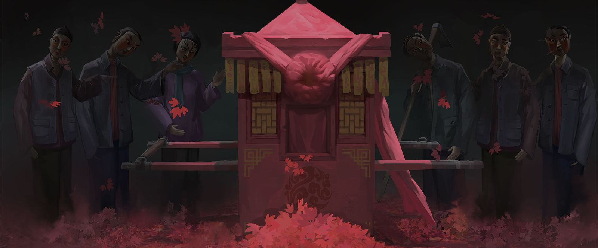
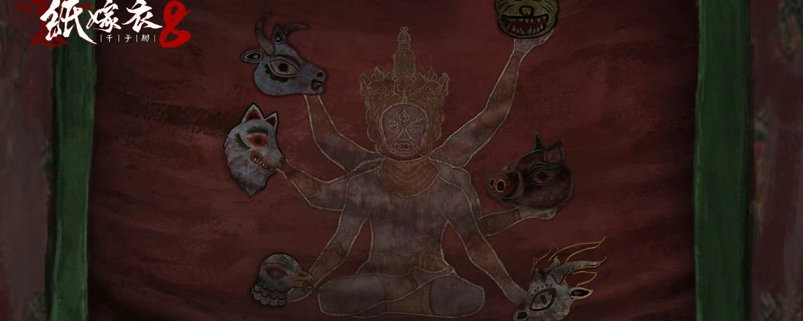
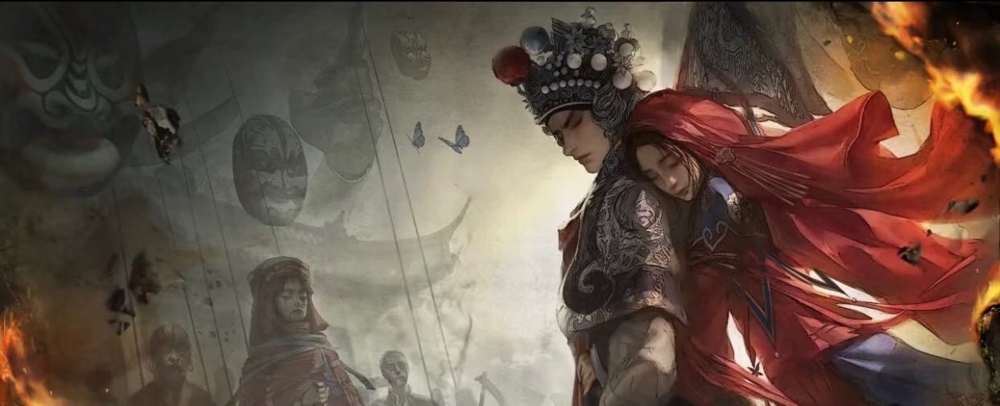

ALMOST HUMAN. NEVER HUMAN.
解谜
PLAYING
THE RITUAL
You don't fight the ghost. You perform the ritual.
Set up the mourning shrine. Read the dream book. Follow the feng shui. Stage the shadow play.
SOUND · OPERA SINGING & FOLK MUSIC
鸳鸯债 “UNRESOLVED LOVE” · 15M+ VIEWS ON BILIBILI
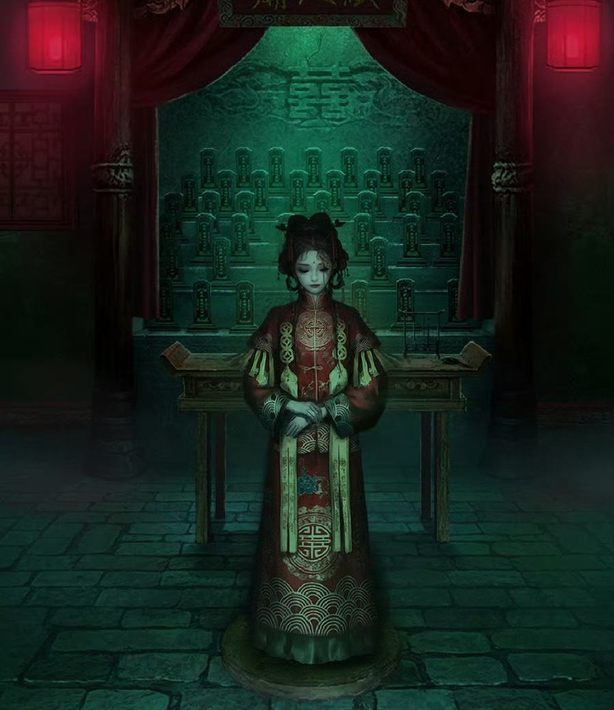
冥婚
GHOST
MARRIAGE
A wedding where the bride, the groom, or both are dead.
An unmarried daughter could not be placed on her own family's altar. Marriage was her only way into a family, even after death.
HER PLACE: A PAPER TABLET BY THE DOOR
IT STILL HAPPENS
0 bodies
2013 · NORTHWEST CHINA
Four men jailed for digging up women's corpses and selling them as ghost brides.
¥0
2016 · HENAN
A living woman, drugged and sold as a corpse bride. Guests heard knocking from inside the coffin.
CCTV
2019 · HENAN
Graveyards add cameras and concrete coffins to stop women's bodies being stolen.
THE WEDDING
RED
WHITE
Ning Zifu marries Nie Moqi. During the ceremony, the bride in red becomes a bride in white. Then every guest is gone.
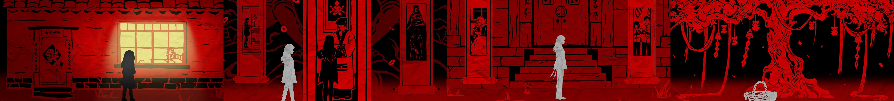
THE TWINS
ILLUSTRATIONS · PAPER BRIDE 8
A shaman says twins will bring the village bad luck.
Only one daughter may stay.
The elder sister, Moli, is left at the City God temple.
What is left behind: an empty basket.
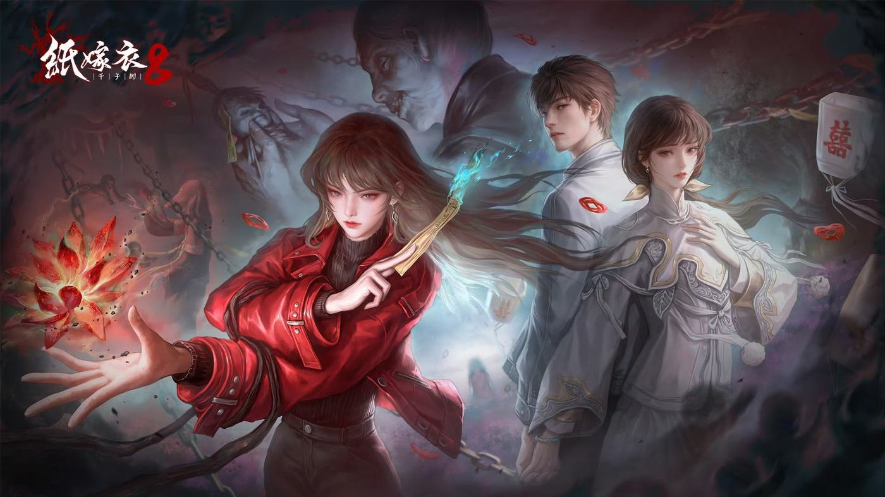
MOQI
聂莫琪
The white bride. Her soul is pulled from her body.
MOLI
聂莫黎
The red bride. The sister who was thrown away.
SOME BRIDES WEAR BOTH.
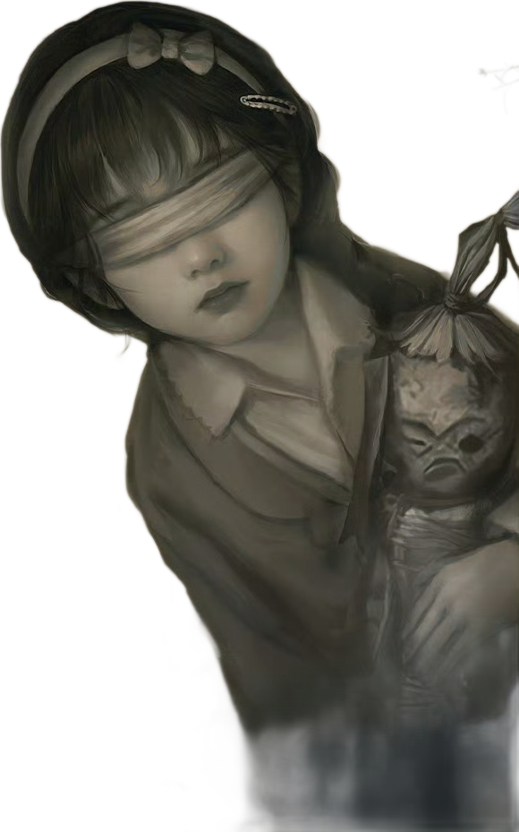
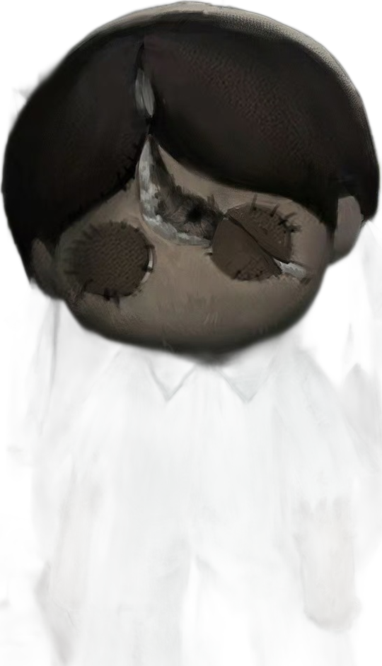
千子树
THE THOUSAND-
CHILDREN TREE
The village prays to it for children. It feeds on the souls of infants.
Same twins. Same village. A daughter can be thrown away, and a child can be traded for luck.
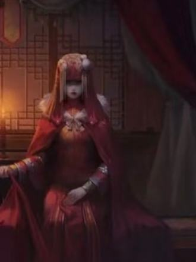
01 · REPLACEDMoli takes her sister's place in red.
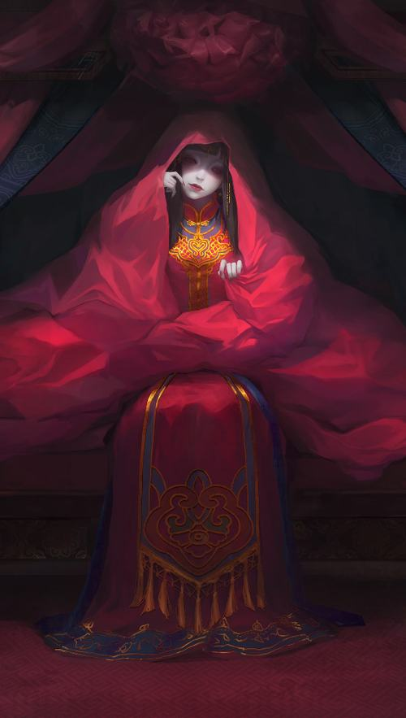
02 · CAPTUREDTao Mengyan is taken to be a paper bride.
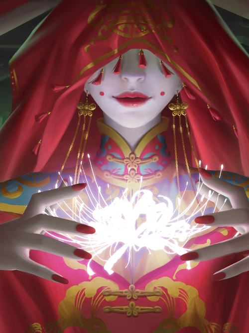
03 · POSSESSEDA paper bride tries to return through Wang Jiaotong.
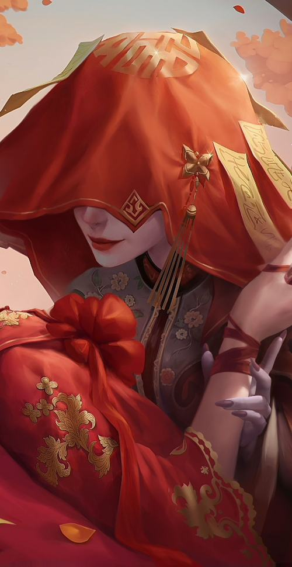
04 · SACRIFICEDCui Qianshu is married off as an offering.
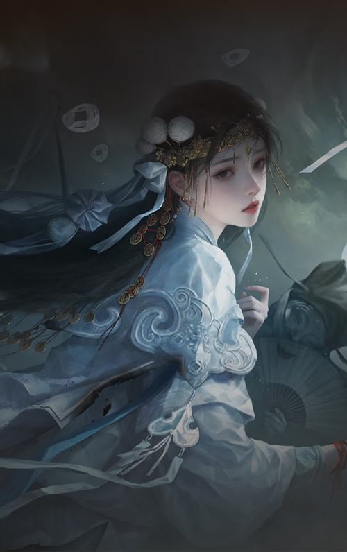
05 · OFFEREDTao Mengyan is pushed to become a paper bride.
EVERY GAME, ANOTHER BRIDE
THE BRIDES FIGHT BACK
PAPER BRIDE 2 · TAO MENGYAN
Escapes Zangling Village and reports the cult leader.
PAPER BRIDE 3 · WANG JIAOTONG
Seals herself and the paper bride behind the Ghost Gate.
PAPER BRIDE 8 · NIE MOQI
Can choose to defy fate.
A ghost marriage is arranged. The love in these games is chosen.
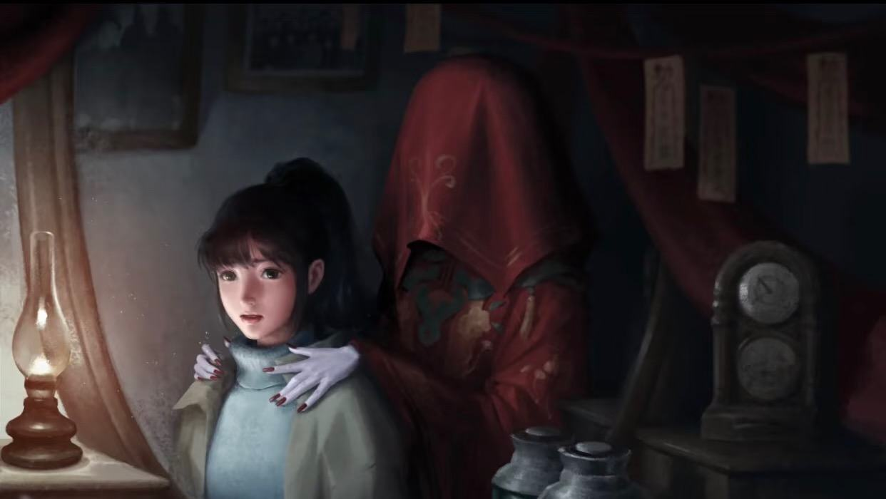
VICTIM
OR MONSTER?
Moli became a ghost. But who threw her away?
VICTIM
Left at a temple as a baby, because a shaman called her bad luck.
MONSTER
Steals her sister's soul, her name, and her wedding.
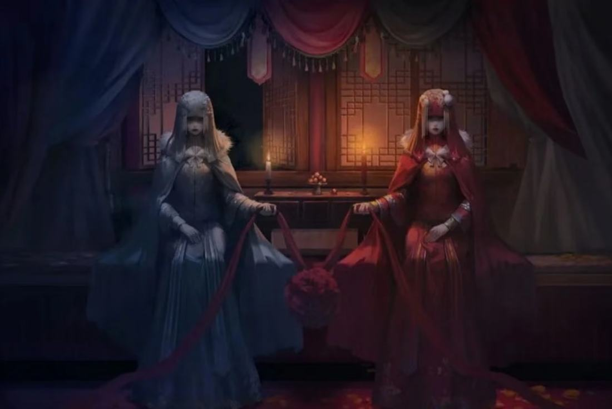
BUT SOME SCHOLARS DISAGREE
YUE CAO · DIGRA AUSTRALIA 2025
These games use wedding and funeral customs to build fear, not to criticize them.
OUR ANSWER
The fear points at the custom. A shaman's word throws a baby away. A village worships a tree that eats children. Bride after bride is taken.
The game doesn't just decorate with the custom. It shows the custom hurting people.
CORPSE BRIDE · 2005
“The dead bride wants love.”
Emily is killed by the man she trusted. She waits for a groom.
PAPER BRIDE · 2021
“The living make the dead.”
Daughters are given away, sold, or sacrificed by family and village rules.
In one, we fear the dead. In the other, we fear the rules of the living.
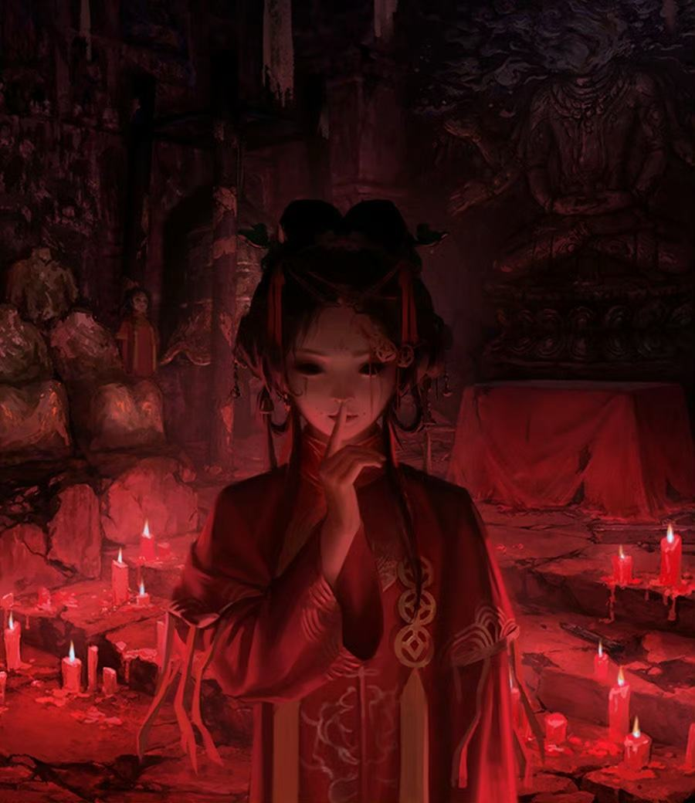
囍
囍
She wasn't born a monster.The village made one.
纸嫁衣
THANK YOU
Questions?
SOURCES
“Chinese ghost marriage.” Wikipedia.
“Men jailed in China for ‘ghost marriage’ corpse bride trafficking.” The World, 2013.
“Ghost marriage trafficking case in Henan.” Sixth Tone, 2016.
“Ghost Marriage and Corpse Trading Crime in Rural China.” City University of Hong Kong.
“Paper Bride.” Wikipedia.
Cao, Yue. “From Fear to Parody.” Proceedings of DiGRA Australia, 2025.
“Horror Series Becomes an Instant Hit with the Use of Cocos Creator.” Cocos, 2022.
Plot summaries: 游侠手游, 游戏宝, PP助手, TapTap.
Images: official art from the Paper Bride series.